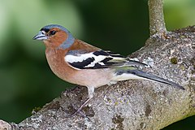

Acueil
Acueil
Informations sur la Mésange charbonnière
Le Pinson des arbres (Fringilla coelebs) est une espèce de petits passereaux, partiellement migrateur, très répandu, de la famille des Fringillidés. C'est la plus fréquente et la plus répandue des trois espèces de pinsons. Il est présent dans toute l'Europe à l'exception de l'Islande et de la Scandinavie la plus septentrionale, son aire de répartition s'étend vers l'est jusqu'en Sibérie centrale. C'est aussi un oiseau reproducteur en Afrique du Nord et au Proche-Orient jusqu'en Iran. En Nouvelle-Zélande et en Afrique du Sud, le pinson a été introduit par l'homme.
En Europe centrale, le pinson est l'un des oiseaux reproducteurs les plus répandus. Son aire de répartition s'étend de la côte à la limite des arbres dans les montagnes. Les pinsons d'Europe du Nord et de l'Est sont des oiseaux migrateurs, alors qu'en Europe centrale, ils sont des migrateurs partiels. On distingue plusieurs sous-espèces. Trois d'entre elles se trouvent aux îles Canaries, ainsi qu'une aux Açores, à Madère, en Sardaigne et en Crète. Comme tous les fringillidés, c'est une espèce protégée en France.
Plus d'information sur Wikipédia